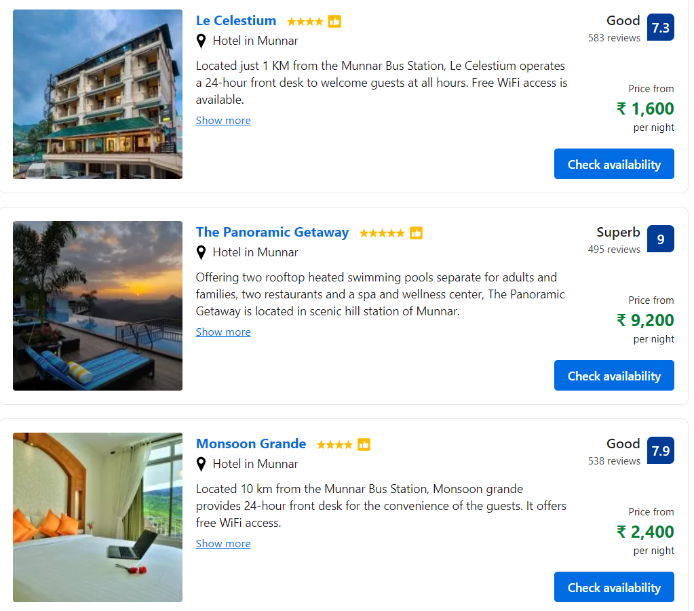

KERALA
1.MUNNAR

Munnar is a town and hill station in the Idukki district of the southwestern Indian state of Kerala. Munnar is situated at around 1,600 metres (5,200 ft) above mean sea level,in the Western Ghats mountain range. Munnar is also called the "Kashmir of South India" and is a popular honeymoon destination.
HOTELS
HOW TO REACH
By Air:
Cochin International Airport, situated around 110 km away, is the nearest airport to Munnar. From Mumbai, flights are available for Cochin and from Cochin you have myriad travel options. Bangalore to Munnar flight can also be taken as there are various operators providing direct services from Bangalore to Cochin. Flights are regularly operated by major airlines like Air India, IndiGo, SpiceJet, Srilankan Airlines, Gulf Air and Jet Airways. Travellers can easily avail of bus and taxi services from here to reach Munnar. Kochi airport to Munnar distance can be easily covered within 3 hours owing to the good condition of roads.
By Railway:
Ernakulam Junction railway station in Cochin, about 130 km away, is the closest railhead serving Munnar. Trains to Cochin are frequently available as the destination is well connected to major Indian cities by an extensive railway network. There are regular trains from cities like Bangalore, Mangalore, Trivandrum, Delhi, Mumbai and Chennai. From outside the railway station, travellers can avail bus and taxi services to reach Munnar.
By Road:
Travelling to Munnar by road can be a marvellous experience as the roads leading to this beautiful place are exceptionally stirring and awe-inspiring. There are regular state buses available from Coimbatore, Kozhikode, Cochin, Wayanad and Madurai. Besides, travellers can drive to Munnar from Coimbatore via NH 69 followed by NH 209 coving a distance of about 150 km. Bangalore to Munnar bus is also available which takes around 10 to 11 hours.